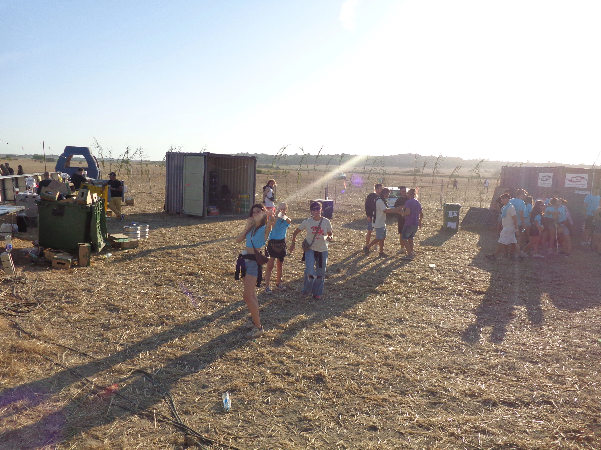
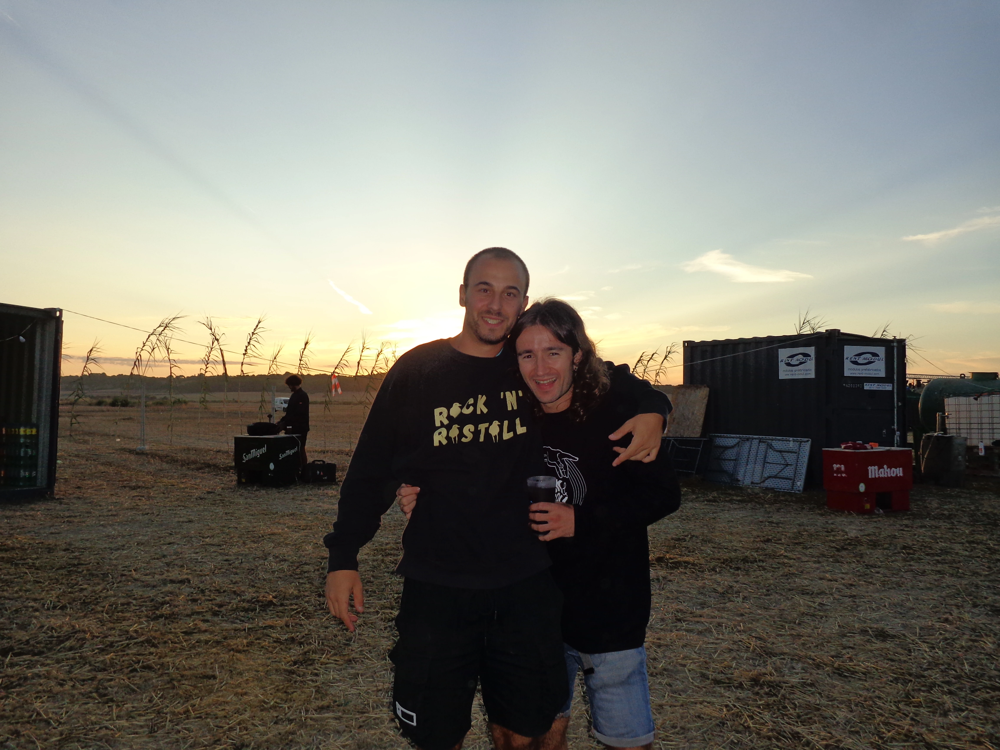
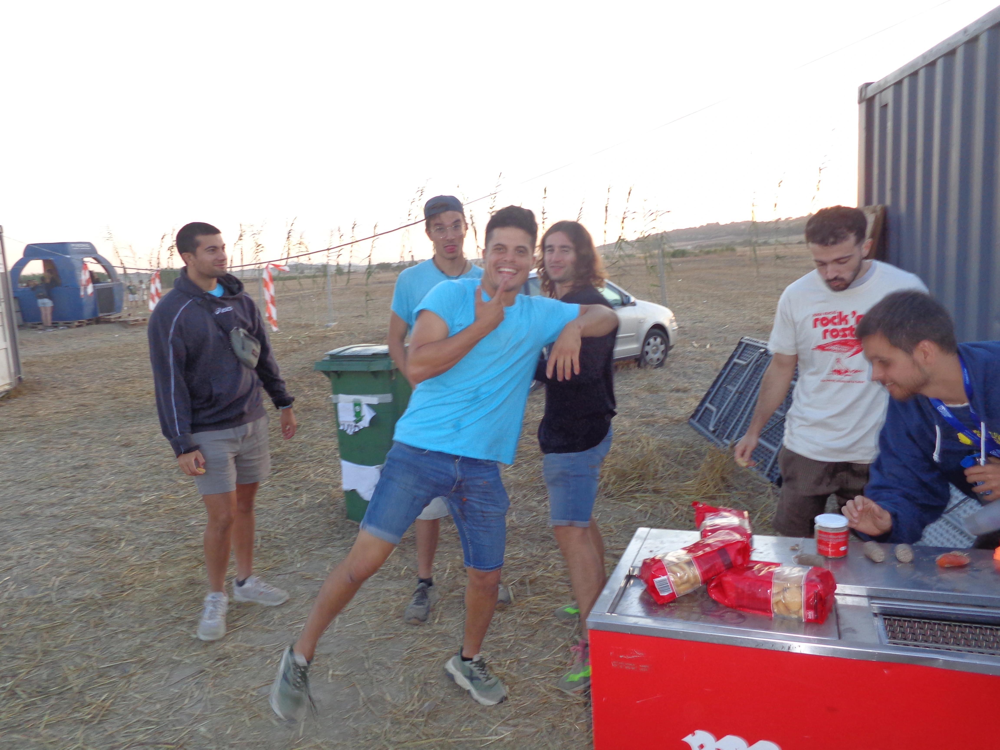
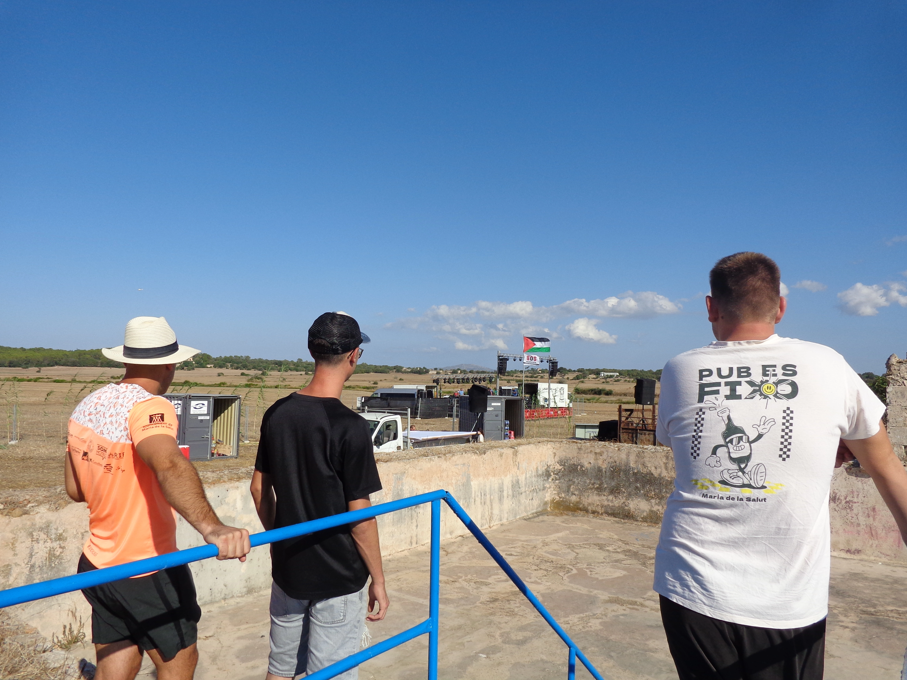
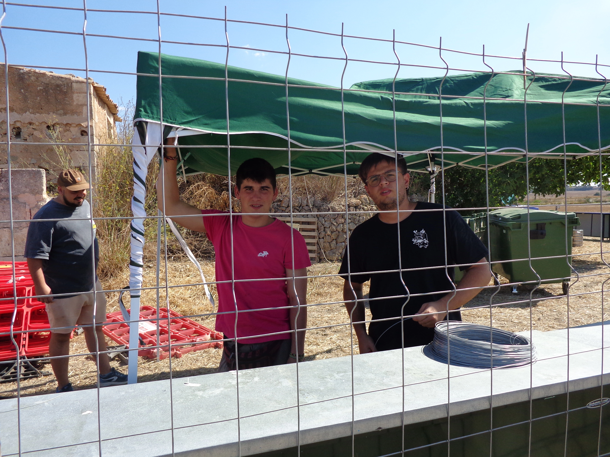
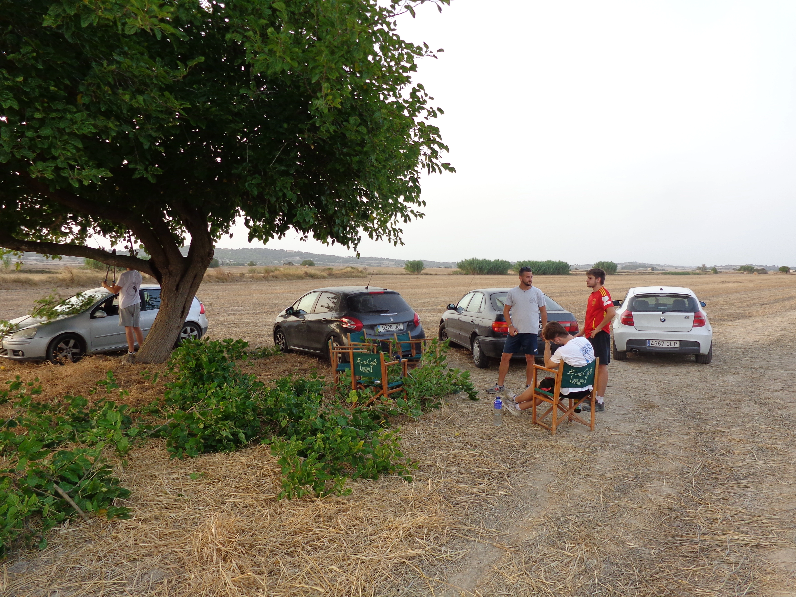
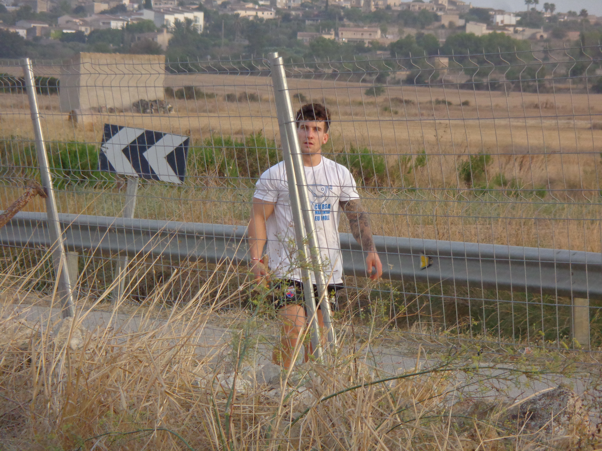
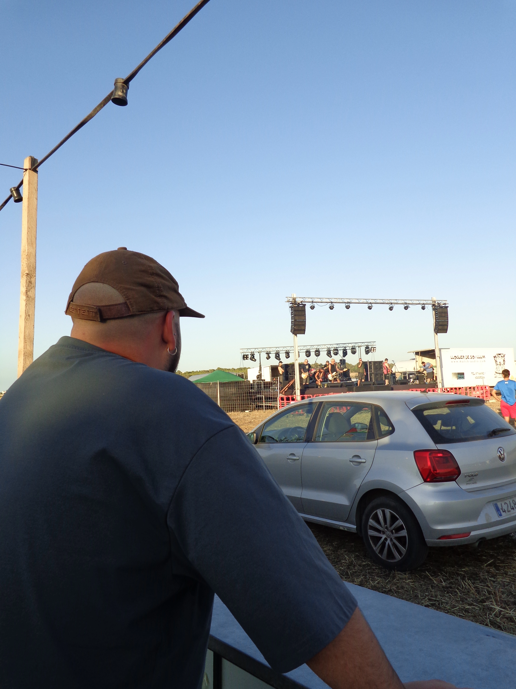
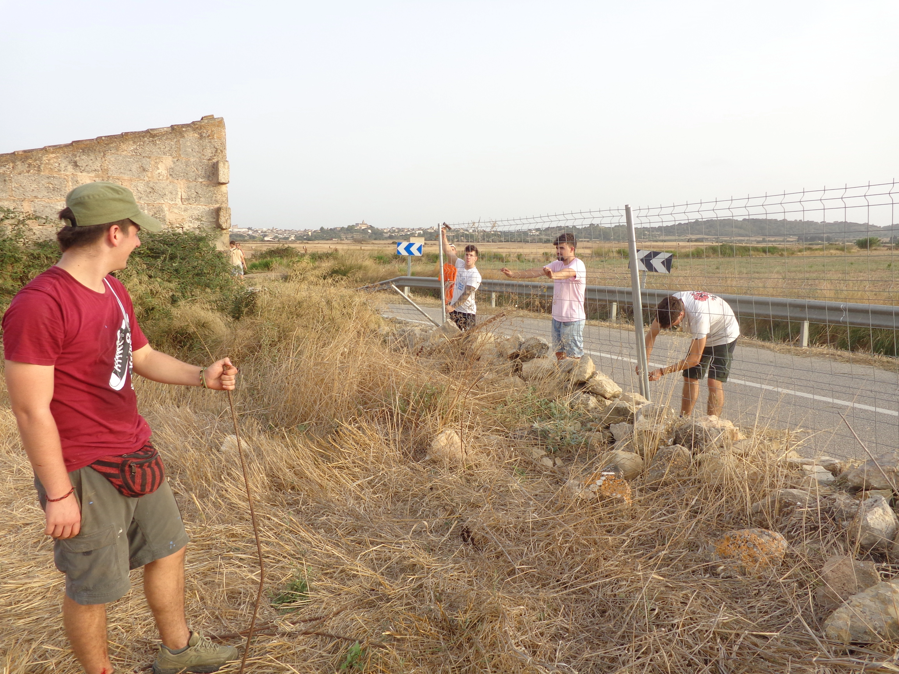
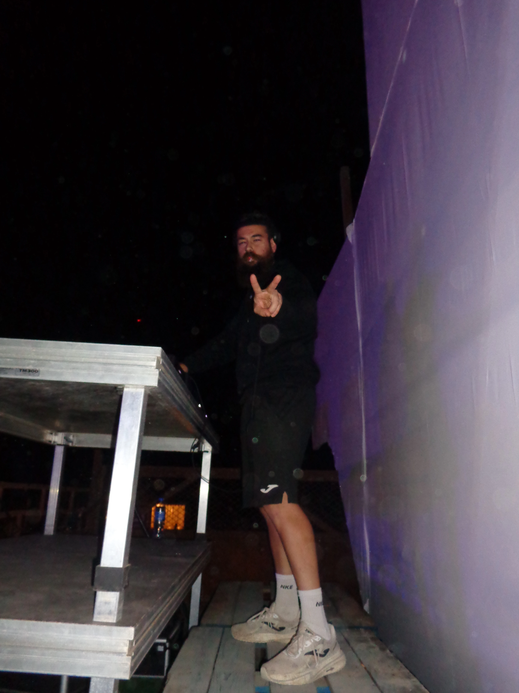

Com sempre, el darrer dissabte d'agost
Dissabte 29 d’agost de 2026 · Son Perot, carretera Maria de la Salut > Muro.
30a edició
Rock’n’Rostoll és el festival autogestionat de referència al Pla de Mallorca. Un punt de trobada entre generacions, música i llibertat, on el rock i l’electrònica omplen el rostoll de Maria de la Salut cada darrer dissabte d’agost. Celebrem 30 edicions d’història, germanor i molta festa!
00
Dies
00
Hores
00
Minuts
00
Segons
Organitza la teva arribada
Tot el que has de saber per gaudir del Rock’n’Rostoll amb comoditat i seguretat. Consulta horaris, accessos i normes bàsiques abans d’arribar a Son Perot.
Dissabte 29 d’agost de 2026 · Son Perot, carretera Maria de la Salut > Muro.
Entrada i aparcament gratuït al recinte. Aparcament alternatiu al poble (a 2 km). Venir en cotxades o busos ajuda a evitar embossos i accidents. Prohibit l’acampament defora dels aparcaments habilitats.
Galeria
Un recorregut visual pel darrer festival.










Xarxes
Clips i moments compartits a les xarxes.